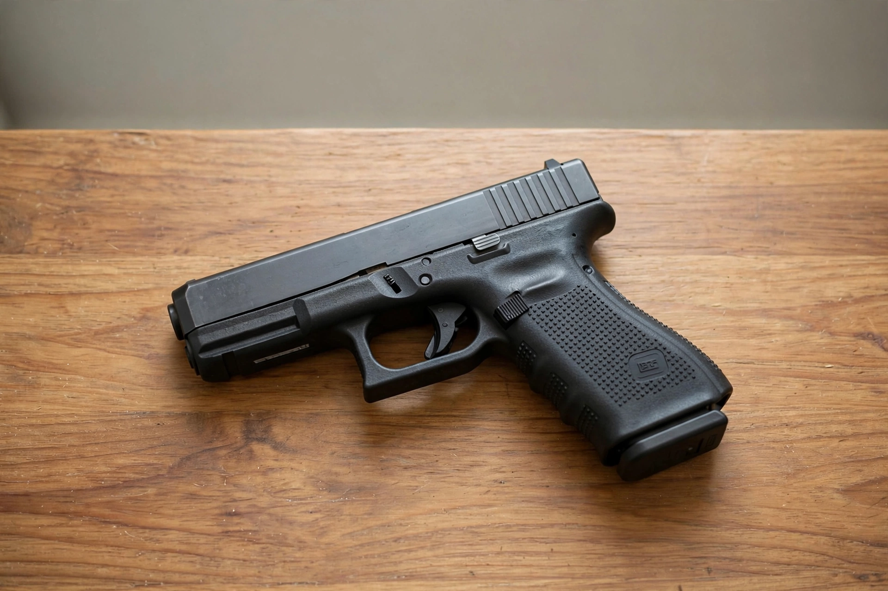

McDonald v. City of Chicago, 561 U.S. 742 (2010), is a landmark decision of the Supreme Court of the United States holding that the Second Amendment right to keep and bear arms for self-defence is incorporated against the states through the Due Process Clause of the Fourteenth Amendment. The ruling struck down handgun bans in Chicago and Oak Park, Illinois, extending the logic of District of Columbia v. Heller (2008), which had applied only to the federal government.
| McDonald v. City of Chicago | |
| Court | Supreme Court of the United States |
|---|---|
| Decided | 28 June 2010 |
| Citation | 561 U.S. 742 |
| Vote | 5–4 |
| Majority | Alito, joined by Roberts, Scalia, Kennedy; Thomas (concurring in part) |
| Dissents | Stevens; Breyer (joined by Ginsburg, Sotomayor) |

Chicago's handgun ban, in force since 1982, was invalidated by the decision.
In 1982 Chicago enacted an ordinance effectively banning the possession of handguns by private citizens. After Heller recognised an individual Second Amendment right against the federal government, Otis McDonald — a 76-year-old Chicago resident who wanted a handgun for protection in his high-crime neighbourhood — and other plaintiffs sued, arguing the right applied to the states as well. The Seventh Circuit upheld the ban, bound by nineteenth-century precedents (United States v. Cruikshank, Presser v. Illinois) holding the Second Amendment inapplicable to the states, and the Supreme Court granted certiorari.
Justice Alito's plurality opinion held that the Fourteenth Amendment's Due Process Clause incorporates rights that are "fundamental to our scheme of ordered liberty" or "deeply rooted in this Nation's history and tradition", and that the right to keep and bear arms for self-defence met that test. Justice Thomas concurred in the judgment but argued incorporation should flow from the Privileges or Immunities Clause — reviving a clause largely dormant since the Slaughter-House Cases (1873) — rather than from substantive due process. The dissents, by Justices Stevens and Breyer, disputed the right's fundamentality, warned against restricting democratic lawmaking, and questioned the majority's historical analysis.
McDonald completed the incorporation of the Second Amendment and became a leading modern case study in the selective-incorporation doctrine — the same doctrinal family as the equal protection cases. It set the stage for later rulings, notably New York State Rifle & Pistol Association v. Bruen (2022), which established a text-history-and-tradition test for firearms regulation. Chicago responded by enacting a new ordinance with licensing and registration requirements; further litigation over local gun laws continued for years.